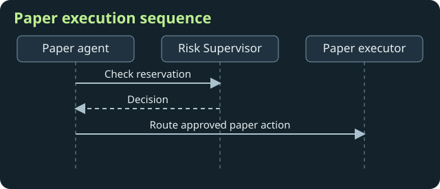
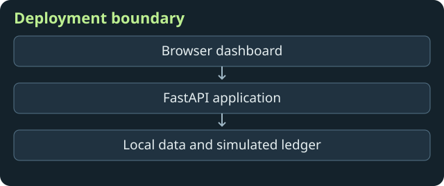

Paper agents consume market data, evaluate strategy candidates and discover opportunities. Application policy controls reservation and simulated execution. Position handling feeds portfolio accounting and explanation views. Strategy logic, ranking, limits, and production configuration are outside these excerpts.
Implemented architecture
The diagrams summarize observed components and flows. Proposed changes appear in the walkthroughs and roadmap.
System and component architectureOpportunity lifecycle

Paper execution sequence

Deployment boundary
Source and code walkthroughs
Each excerpt is transcribed from its stated commit. Surrounding application code and configuration are outside the excerpt.
The method asks the shared supervisor for permission before it records an opportunity.
Inputs, outputs and control flow
A RiskReservation and portfolio equity go to evaluate. A denial raises ValueError with the reason. Success writes one entry keyed by opportunity ID and returns None.
Design, integration and security
The supervisor owns reservation state. The paper execution path can act only after allocation succeeds. The excerpt omits the strategy, ranking policy, and numerical limits. Evaluate can update observed equity even when no reservation is written.
Testing and verification
tests/test_decision_flow_accounting.py checks repeated reservations replace the same opportunity.
Potential improvements
If callers can reserve concurrently, make evaluation and mutation atomic and verify that the simulation and ledger agree.
SLEEP is a crypto research and paper-investing platform. It brings market observation, strategy evaluation, simulated execution, and review into one workflow so an operator can examine a decision and its consequences using public and synthetic inputs.
Architecture and integrations
A Python and FastAPI service serves a browser dashboard. Public market data and deterministic demo data feed a research pipeline, policy checks, and a simulated ledger. SQLite stores application state and audit records. Optional OpenAI explanations sit alongside a grounded local explanation path.
Implemented capabilities and safeguards
The platform supports research views, historical replay, paper investing, risk checks, and ledger review. Exchange inputs are used for market data. Execution is constrained to paper mode, with research-only accounting for additional strategy families. The assistant explains context while application code controls what actions are allowed.
Engineering challenge
Keeping research ideas, simulated execution, and user-facing explanations consistent across different operating modes requires explicit action boundaries and release-level regression checks.
Validation and roadmap
The source includes Python and browser regression tests and a Linux release-validation path. This case study describes a research platform with local and release-candidate evidence. It makes no claim about live service health or investment outcomes. Release lineage, repeatable packaging, and synthetic demo verification remain engineering priorities.